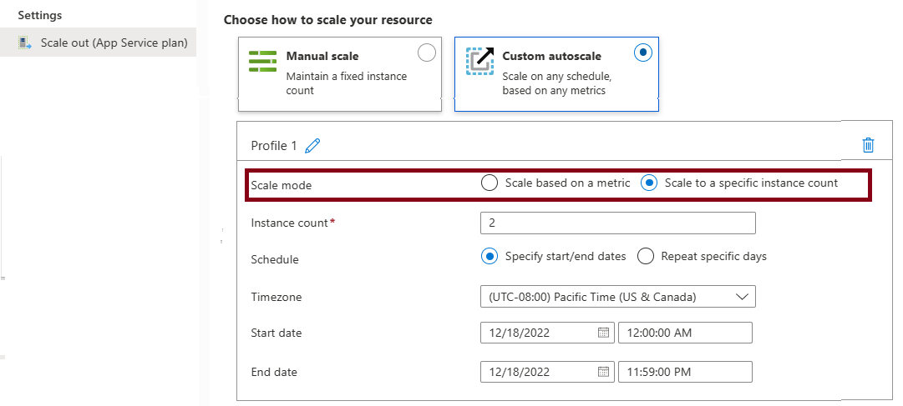

Web Application
App Service Plan
- An App Service plan defines a set of compute resources for a web application to run.
- An App Service = Azure Server WebFarms, if you park anything under Microsoft.Web/serverFarms it ties to this.
- App Service Plans are OS and Region specific. You cannot move an App Service Plan to a different region. You can move an App Service Plan to a different OS, but that requires recreating the App Service Plan and redeploying the app.
| Feature | Description |
|---|---|
| App Service Plan | Determines the compute resources (CPU, RAM, storage) allocated to your web app. |
| Pricing Tier | Defines the features and performance level of your app (e.g., Free, Shared, Basic, Standard, Premium, Isolated). |
| Instance Size | Specifies the CPU and memory resources available to each instance of your app. |
| Instance Count | The number of VM instances running your app. Can be scaled manually or automatically. |
| Scale-Out | Automatically adds more instances when traffic increases. |
| Scale-In | Automatically removes instances when traffic decreases. |
| Autoscale Settings | Configure rules for automatic scaling based on metrics like CPU usage, memory usage, or request count. |
| Deployment Slots | Create separate environments (e.g., staging, production) for testing and deploying changes without affecting the live site. |
| Custom Domains | Map your own domain name to your web app. |
| SSL/TLS Certificates | Secure your app with SSL/TLS certificates. |
| VNet Integration | Connect your app to a virtual network for secure access to private resources. |
| Private Endpoints | Provide private access to your app from within a virtual network. |
| Application Insights | Monitor your app's performance and usage. |
| Azure Backup | Back up your app's configuration and content. |
| Azure Advisor | Get recommendations for optimizing your app's performance and cost. |
| Azure Policy | Enforce organizational standards and assess compliance. |
| Azure Role-Based Access Control (RBAC) | Control access to your app resources. |
| Azure Disk Encryption | Encrypt your app's data at rest. |
| Azure Security Center | Provides security management and threat protection. |
| Azure Advisor | Provides recommendations for optimizing your app's performance and cost. |
| Azure Policy | Enforces organizational standards and assesses compliance. |
| Azure Role-Based Access Control (RBAC) | Controls access to your app resources. |
| Azure Disk Encryption | Encrypts your app's data at rest. |
| Azure Security Center | Provides security management and threat protection. |
Pricing Tier
| Tier | Description |
|---|---|
| Free | Limited features and performance. These tiers are intended to be used for development and testing purposes only. No SLA is provided for the Free and Shared service plans. |
| Shared | Shared resources with other apps. Same as Free, no SLA. |
| Basic | Dedicated resources with basic features. Built-in network load-balancing support automatically distributes traffic across instances. The Basic service plan with Linux runtime environments supports Web App for Containers. |
| Standard | Dedicated resources with advanced features. The Standard service plan with Linux runtime environments supports Web App for Containers. Built-in network load-balancing support automatically distributes traffic across instances. |
| Premium | High-performance dedicated resources with advanced features. Offering Dav4 and Ddv4-series virtual machines and SSD storage. |
| Isolated | Dedicated resources in a private network with advanced features. IsolatedV2 is the preferred tier offering newer hardware, up to 200 instances, private environments, and enhanced security. |
| Feature | Free F1 | Basic B1 | Standard S1 | Premium P1V3 | Isolated V2 |
|---|---|---|---|---|---|
| Usage | Development, Testing | Development, Testing | Production workloads | Enhanced scale, performance | Network-isolated workloads |
| Staging slots | N/A | N/A | 5 | 20 | 20 |
| Auto scale | N/A | Manual | Rules | Rules, Elastic | Rules |
| Scale instances | N/A | 3 | 10 | 30 | 200 |
| Daily backups | N/A | N/A | 10 | 50 | 50 |
Tier Scaling
Your App Service plan can be scaled up and down at any time by changing the pricing tier of the plan.
AutoScale (Rule base)
Only available on Standard, Premium, and Isolated tiers.

Metric-based rules measure application load and add or remove virtual machines based on the load, such as "do this action when CPU usage is above 50%." Example metrics include CPU time, Average response time, and Requests.
Time-based rules (or, schedule-based) allow you to scale when you see time patterns in your load and want to scale before a possible load increase or decrease occurs. An example is "trigger a webhook every 8:00 AM on Saturday in a given time zone."
Elastic Autoscale
Azure App Service offers Automatic scaling (also called Elastic scaling) for PremiumV2 and PremiumV3 tiers. This is a separate scaling feature that works differently from the autoscale rules.
HTTP traffic-based. Automatic scaling responds directly to incoming HTTP requests without requiring you to configure scaling rules.
Platform-managed. Azure automatically manages the scaling decisions based on traffic patterns, eliminating the need for rule configuration.
Always-ready instances. Maintains warmed instances to handle traffic spikes immediately.
Tier availability. Available only on PremiumV2 and PremiumV3 tiers.
Deployment Slots
- Standard and above tiers support deployment slots.
- Used to stage and test new versions of an app before swapping them into production. Deployment slots
- Each stage has a unique domain.
- Support slot swap, to change hostname.
VNet Integration
- Allows the app to connect to resources in a virtual network.
- Private Endpoints provide private access to your app from within a virtual network.
- Types of VNet Integration:
- Multi-tenant VNet Integration : Used in Basic, Standard, Premium. Injects the subnet into the App Service network, App Service Plan is still multitenant.
- Isolated VNet Integration : Used in Isolated/IsolatedV2. The App Service plan is isolated into a dedicated VNet.
flowchart LR A[App Service Plan] -->|Multi-tenant VNet Integration| B[VNet Integration Subnet] --> W[Private Endpoint] --> Z[To other resources, like SQL Server] A[App Service Plan] -->|Isolated VNet Integration| C[Isolated VNet] --> W
Logs Types
(logs)[https://learn.microsoft.com/en-us/azure/app-service/troubleshoot-diagnostic-logs] 1. Web server logs => Only for IIS on Windows. 2. Application logs => - Verbosity: Critical <- Error <- Warning <- Info <- Verbose - Filesystem => Default, and temporary storage. Logs are deleted when app is deleted. - Blob storage => Stored logs to Storage Account 3. Deployment logs => Enabled by default. Provide information about the deployments that occur in your web application. See in Deployment / Deployment Center. 4. Detailed error messages => Only for IIS on Windows. Provide information about errors that occur in your web application, such as invalid page requests and application errors. 5. Standard Azure logs: - Resource Logs - also known as Diagnostics Logs, send to Log Analytics (Azure Monitor), Storage Account, or Event Hub. - Activity Logs - Always to Azure Monitor 6. Log Stream => Shows application logs in real time. 7. All logs needs to be enabled manually, except for Activity Logs and Deployment logs.
Notes
- "ASP.Net Core" is OS agnostic. If exam notes APS.Net only means it's for windows.